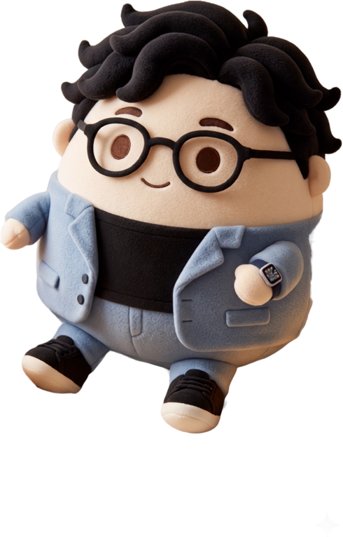

할 일이 많을수록
일은 안
끝난다
오늘 할 일
3
버릴 것
부터 정한다
메일 47통 답장
주간 회의 자료
핵심 보고서 마감
슬랙 알림 확인
고객 미팅 준비
지난 회의록 정리
팀원 1:1 면담
엑셀 서식 다듬기
보고서 표지 디자인
+ 14개 더…
남은
3개
에만 집중
1
핵심 보고서 마감
2
고객 미팅 준비
3
팀원 1:1 면담
같은 시간,
8배
집중
23개로 나누면
0
%
3개로 나누면
0
%
하나에 쓰는 시간의 몫
오늘,
안 할 일
부터
지워보세요
저장해두고 내일 아침 다시 보기
